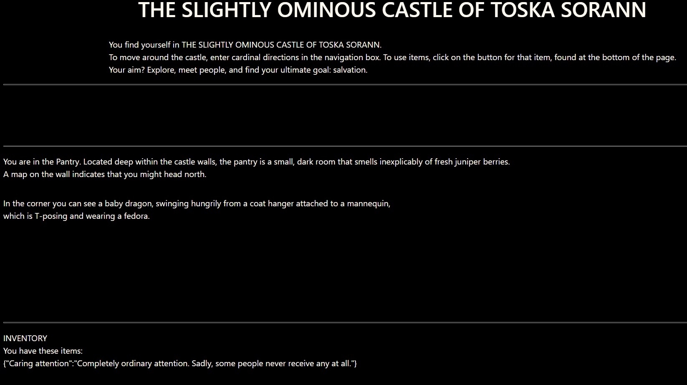

The Slightly Ominous Castle of Toska Sorann
A forlorn text game about exploring a castle and meeting people's needs, created with object-oriented
programming in Javascript.

My new challenges in creating The Slightly Ominous Castle of Toska Sorann were:
-
Getting to grips with Object-Oriented Programming; this was my first OOP project.
-
I'm a fan of video games, but there's often an unquestioned assumption that they'll contain violence, even when it doesn't really suit the game. So I wanted to make a game that was about meeting the needs of people, rather than fighting them.
-
One of my bugbears with text-based games is the classic problem of having to guess what the available commands are: many a player has stories of becoming frustrated as they try to tell the game that they just want to use the hammer to hit the nail.
This creates a false separation between the player and the game: in the world of the game, surely we should be able to perform these obvious tasks without guessing the exact word to do so.
I wanted to avoid this by making it very clear which commands the user is expected to type, and to make the use of items button-based rather than command-based.
OOP was a useful approach for my approach to the game:
-
By giving each character their own object, I was able to have an individual need for that character, as well as different descriptions of what they're like before and after their need is met.
-
It seemed reasonable for the player to enter cardinal directions to move between rooms in the game, so there's a navigation textbox and a small explanation of how to use it.
-
Items have their own objects, and item buttons are displayed by checking whether that item's "collected" property is true. Rather than needing a command to use the item, the player just clicks the item's button.
The player still has to discover when they should use each item, of course.